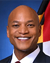
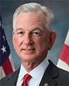
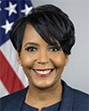

Currently there are 27 Republican governors and 23 Democratic governors. In the 2025-2026 cycle, there are elections for governor in 38 states, 2 in 2025 and 36 in 2026. Here is the breakdown.
- 7 Democrats are term limited and are not up for reelection.
- 10 Republicans are term limited and are not up for reelection.
- 11 Democrats are eligible to run for another term and are expected to do so.
- 10 Republicans are eligible to run for another term and are expected to do so.
For the time being, we are assuming all incumbents will run for reelection unless they specifically state that they won't.
The Democratic-held seats are listed first below, in alphabetical order by state, with the Republicans following.
Click on a picture for the candidate's webpage.
Click on a name for the candidate's entry in Wikipedia.
Click on a party (D) or (R) for the state party.
The  indicates a race to watch.
indicates a race to watch.
All links open in a new window. Type CTRL-W in the window to close it (Command-W on a Mac).
States with Democratic governors
Arizona
| Incumbent | Challenger | Notes |
|
Katie Hobbs (D) |
Andy Biggs (R) |
Arizona is a purple state so Republicans will definitely contest it. Karrin Taylor Robson (R) ran for governor in 2022 and lost the Republican primary to Kari Lake. Now that Lake found a new job telling the world about King Donald I, Robson tried again, even though some Republicans call her a RINO. She is very Trumpy and very rich. Trump endorsed her. Freedom Caucus member Rep. Andy Biggs (R-AZ) is also filed and Trump endorsed him as well. TWO ENDORSEMENTS IS BETTER THAN ONE! Then Rep. David Schweikert (R-AZ) also jumped in. At that point Robson got out. Since Biggs has Trump's endorsement and Schweikert does not, Biggs won the nomination. Arizona is a purple state trending blue. Hobbs is the strong favorite. |
California
| Challenger | Challenger | Notes |
|
Xavier Becerra (D) |
Steve Hilton (R) |
Gov. Gavin Newsom (D) is term-limited. California is just bursting with politicians who would love to be governor. Over a dozen filed to run. But looming over the field was Kamala Harris, but she decided a 5% chance of becoming president beats a 50% chance of becoming governor of the most populous state. Many of the candidates stumbled, so Rep. Eric Swalwell (D-CA) jumped in a bit late. He got caught Behaving Badly and left the race. In the end, Xavier Becerra (D) and Steve Hilton (R) made it to November. Becerra is the overwhelming favorite. |
Colorado
| Challenger | Challenger | Notes |
|
Phil Weiser (D) |
Victor Marx (R) |
Gov. Jared Polis (D) is term-limited. Sen. Michael Bennet (D-CO) is tired of being a senator and wants to get out of the swamp and move to the governor's mansion in beautiful Colorado. It is not even "going home" for him since he grew up in D.C. where has father was an aide to Hubert Humphrey. He thought he would be a shoo-in, but AG Phil Weiser jumped in to and won the primary. The Republicans had a rough-and-tumble primary and pastor Victor Marx won. Unlike Weiser, Marx can perform exorcisms. We are not sure how many voters need exorcisms, though. |
Connecticut
| Incumbent | Challenger | Notes |
|
Ned Lamont (D) |
Ryan Fazio (R) |
Connecticut does not have term limits, so Gov. Ned Lamont could run again, and is in fact doing so. He got the Democratic nomination and will crush Ryan Fazio (R). |
Hawaii
| Incumbent | Challenger | Notes |
|
Josh Green (D) |
Gary Cordery (R) |
Josh Green got 63.5% of the vote last time. It is possible that no serious Republican will even bother challenging him. Surprise, a guy in the constrruction business, Gary Cordery, filed and won the Republican nomination. Pointless in such a blue state as Hawaii. |
Illinois
| Incumbent | Challenger | Notes |
|
J.B. Pritzker (D) |
Darren Bailey (R) |
J.B. Pritzker is well known and also a billionaire. Maybe some serious Republican will try a kamikaze mission, but maybe not. What's the point of it? Darren Bailey decided to waste his time running but win lose in landslide. |
Kansas
| Challenger | Challenger | Notes |
|
Cindy Holscher (D) |
Ty Masterson (R) |
Gov. Laura Kelly (D) is term-limited. Despite being a red state, Laura Kelly won an open-seat election in 2018 and was reelected in 2022. She got poor opponents both times. On the Republican side, state Senate President Ty Masterson has Trump's endorsement. He won the primary easily and is the favorite to be the next governor of Kansas. On the Democratic side, state Sens. Cindy Holscher Ethan Corson jumped in. So is Overland Park Mayor Curt Skoog. Holscher won the primary |
Maine
| Challenger | Challenger | Notes |
|
Hannah Pingree (D) |
Bobby Charles (R) |
Janet Mills (D) is term limited and entered the Senate race grudgingly. Then she exited it gleefully. Former Speaker of the state House (and daughter of a congresswoman), Hannah Pingree, has jumped into the governor's race. So has the son of Sen. Angus King Jr., Angus King III and Nirav Shah. Ditto Maine SoS Shenna Bellows. Former president of the state Senate, Troy Jackson is in there as well. On the Republican side, state Sen. James Libby, a moderate, is in along with fire-breathing Trumper David Jones. Trumpy lawyer Bobby Charles also threw his hat in the ring. Jonathan Bush, the nephew and cousin of two former presidents also got in, although the Republican Party is a lot less Bushy than it used to be. Ranked choice voting is used and no candidate in either party hit 50% on the first round. In the end, the candidates will be the progressive Pingree against the Trumpy Charles. Should be exciting. |
Maryland
| Incumbent | Challenger | Notes |
|
 Wes Moore (D) |
Dan Cox (R) |
Conceivably, former governor Larry Hogan could have tried to get his old job back, but he didn't. The Republicans nominated former state legislator Dan Cox, who ran against Gov. Wes Moore last time and was crushed then. He will be crushed again this time. |
Massachusetts
| Incumbent | Challenger | Notes |
|
Maura Healey (D) |
Michael Minogue (R) |
Massachusetts is a very blue state, so it takes a very special Republican to beat a sitting Democratic governor. Minogue is not special and Healey bwill get another term |
Michigan
| Challenger | Challenger | Notes |
|
Jocelyn Benson (D) |
John James (R) |
Gov. Gretchen Whitmer (D) is term-limited. Michigan Secretary of State Jocelyn Benson (D) wasted no time and announced her campaign for governor on Jan. 22. Former Secretary of Transportation Pete Buttigieg (D) ruled out a run for governor and so has state Senate Majority Whip Mallory McMorrow, who is running for the Senate. State Senate Minority Leader Aric Nesbitt (R) was the first Republican in but he is not widely known. Rep. John James (R-MI) is in and is better known—from his two previous disastrous runs for the Senate. James got the nomination. Benson will win easily. She also may get voters to the polls who don't like either of the Senate candidates. Her coattails could well save the Senate seat for the Semocrats. |
Minnesota
| Challenger | Challenger | Notes |
|
Amy Klobuchar (D) |
Lisa Demuth (R) |
Tim Walz decided not to run for another term, so it is an open seat. Sen. Amy Klobuchar filed to run. She is the overwhelming favorite. Royce White (R), who ran for the Senate in 2024 and was drubbed decided to be drubbed again so he is running for the Senate again, not for governor. In Mid-December, Mike "My Pillow" Lindell jumped in the race for the GOP nomination. Trump has endorsed him. He is going to embarrass Trump by being crushed by Lisa Demuth, and was. |
New Mexico
| Challenger | Challenger | Notes |
|
Deb Haaland (D) |
Greg Hull (R) |
Gov. Michelle Grisham (D) is term-limited. Former Secretary of the Interior Deb Haaland easily won the Democratic nomnation. If she wins the general election, she will be the first Native American governor. On the Republican side, Rio Rancho Mayor Greg Hull, former director of NM Human Sedvices Duke Rodriguez, and businessman Doug Turner filed to run and Hull won the primary. Haaland is the strong favorite in November. |
New York
| Incumbent | Challenger | Notes |
|
Kathy Hochul (D) |
Bruce Blakeman (R) |
Kathy Hochul is not especially popular, in fact, she she drew a Democratic challenger, Lt. Gov. Antonio Delgado, a former congressman. But when AOC and Zohrqan Mandami endorsed Hochul, Delgado dropped out. Rep. Elise Stefanik announced a run but Nassau County Executive Bruce Blakeman thought she was too toxic, so he got in. Then she unexpectedly dropped out. Trump has endorsed Blakeman. This makes it Hochul vs. Blakeman. The primary is June 23 but it is a formality. |
Oregon
| Incumbent | Challenger | Notes |
|
Tina Kotek (D) |
Christine Drazan (R) |
Christine Drazan ran for governor in 2022 and lost to Tina Kotek. In that race there was an indpendent who got 8% of the vote. Still Oregon is fairly blue so Kotek is the favorite. |
Pennsylvania
| Incumbent | Challenger | Notes |
|
Josh Shapiro (D) |
Stacy Garrity (R) |
Josh Shapiro definitely wants to be president, but first he has to get reelected as governor to have a platform for running. He is a strong candidate. Shapiro has been very good about not saying: "If only Harris had picked me for veep, we would have won all three blue wall states." Not so smart. You don't say the quiet part out loud. The Republicans nominated state treasurer Stacey Garrity. She has no chance. |
Rhode Island
| Incumbent | Challenger | Notes |
|
Helena Foulkes (D) |
Ashley Kalus (R) |
Gov. Dan McKee (D) has drawn a primary opponent Helena Foulkes who is doing well in the polls. A couple of unknown Republicans have jumped in, but Rhode Island is too blue for an unknown Republican to win. Foulkes beat McKee and 2022 gubernatorial candidate Ashley Kalus won the Republican primary. Foulkes will win the general election with ease. |
Wisconsin
| Challenger | Challenger | Notes |
|
David Crowley (D) |
Tom Tiffany (R) |
Tony Evers can run for a third term if he wants to, but he doesn't want to.
He is 73 and has been in elective office for 20 years. He's just had enough.
After a wild and woolly primary in which three Democrats dropped out, and one dropped back in,
and progressive Francesca Hong was projected to win in a landslide, it was actually the moderate
David Crowley (the fellow who dropped out, and then in again) who got the nod.
The Republican is Tom Tiffany, who is pretty extreme, and is an election denier.
It is likely that given the choice between him and the moderate Crowley, and with
anti-Republican sentiment running high, that the Democrats will hold this seat.
|
States with Republican governors
Alaska
| Challenger | Challenger | Notes | ||
|
Bernadette Wilson (R) |
Dave Bronson (R) |
Treg Taylor (R) |
Jonathan Kreiss-Tompkins (D) |
Gov. Mike Dunleavy (R) is term-limited. Lt. Gov. Nancy Dahlstrom (R) entered the race and then left it. Fire-breathing Trumper Bernadette Wilson is running. She is the garbage candidate. Literally. She owns a trash collection business and has never held public office. Former Rep. Mary Peltola would be the strongest Democrat but she is running for the Senate. State Rep. Jonathan Kreiss-Tompkins (D) is in along with former House minority leader Tom Begich (D). Begich then dropped out to avoid splitting the Democratic votes. Bronson and Taylor came in third and fourth in the primary. If enough Republicans list only a first or first and second choice, Kreiss-Tomkins could win. |
Alabama
| Challenger | Challenger | Notes |
|
 Tommy Tuberville (R) |
Doug Jones (D) |
Gov. Kay Ivey (R) is term-limited. Sen. Tommy Tuberville (R-AL) wants the job and will well get it. The Democrats found a plausible candidate in former senator Doug Jones. He is going to run on a platform that Tuberville is a carpetbagger who actually lives in Florida and has lost touch with Alabama. Jones was elected statewide once, so it is not impossible he could pullit off again, but the odds are against him. It is noteworthy that Democrats have been elected governor in other red states recently, namely Kansas and Kentucky. |
Arkansas
| Incumbent | Challenger | Notes |
|
Sarah Sanders (R) |
Fredrick Love (D) |
Nothing to see here. Sarah Huckabee Sanders will get a second term. The Democrats might not even be able to find a sacrificial lamb. Well, a young Black state Rep., Fred Love jumped in. He got the nomination but he won't become governor. |
Florida
| Challenger | Challenger | Notes |
|
Byron Donalds (R) |
David Jolly (D) |
Gov. Ron DeSantis (R) is term-limited. This one was lots of fun with many candidates in both primaries. Rep. Byron Donalds (R-FL) is running. He is extremely Trumpy. He got Trump's endorsement and beat back a flock of challengers to get the Republican nomination. One former Republican, David Jolly filed as a Democrat. The Democrats' bench in Florida is so thin that he got the nomination. Voters generally dislike turncoats but there is something extra about this race: Donalds is Black and Jolly is white and Florida is in the South. Will the voters pick an extremist Black Republican over a moderate former white Republican? It should be interesting. |
Georgia
| Challenger | Challenger | Notes |
|
Rick Jackson (R) |
 Keisha Bottoms (D) |
Gov. Brian Kemp (R) is term-limited. Rep. Lucy McBath (D-GA) jumped in but then paused her campaign her help her husband who has cancer. Former Atlanta Mayor Keisha Lance Bottoms jumped into the void and won the primary easily. Three noteworthy Republicans filed on the GOP side. Lt. Gov. Burt Jones (R-GA) got Donald Trump's endorsement. One guy Trump most definitely does not like is Secretary of State Brad Raffensperger, who famously told Donald Trump in 2020, that, no, he cannot find another 11,780 votes for him. Billionaire Rick Jackson tried to buy the nomination. It worked. This makes it a rich white man with no political experience vs. a Black woman who was formerly mayor of Atlanta. It could go either way. Turnout among Black voters will be very high, which could help Jon Ossoff in his Senate reelection bid. Turnout among progressives will be high due to Ossoff, which could help Bottoms. |
Idaho
| Incumbent | Challenger | Notes |
|
Brad Little (R) |
Terri Pickens (D) |
Brad Little wants a third term, and he will get it without much opposition. Attorney Terri Pickens got the Democratic nomination, but it is pointless. |
Iowa
| Challenger | Challenger | Notes |
|
Zach Lahn (R) |
Rob Sand (D) |
Kim Reynolds would be a sure thing if she ran for reelection, but she has decided against it. On the Republican side, Rep. Randy Feenstra (R-IA) is in and so is state Rep. Eddie Andrews. Unknown farmer and businessman Zach Lahn is also in there. Trump backed Feenstra but Zahn won the primary, a clear sign that farmers are unhappy with Trump. State Auditor Rob Sand is the Democratic nominee. This one could be close. |
Nebraska
| Incumbent | Challenger | Notes |
|
Jim Pillen (R) |
Lynne Walz (D) |
Jim Pillen got 60% of the vote in 2022. He will be very tough to unseat. Maybe the Democrats can dig up William Jennings Bryan and prop him up. That is probably better than all the other options, including the actual nominee, Lynnne Walz. |
New Hampshire
| Incumbent | Challenger | Notes |
|
Kelly Ayotte (R) |
Cinde Warmington (D) |
Kelly Ayotte was previously a senator until she was defeated for re-election by Maggie Hassan. Then she ran for governor in 2024 and won. However, the term for the governor in New Hampshire is just 2 years, so she has to run again in 2026 (and 2028 and 2030 ... to keep her job). There are no term limits in New Hampshire, but eventually all the governors get tired of spending all their time campaigning and call it quits. Ayotte is 56, so she is probably good for a few more tries. However, New Hampshire is a swing state, so she could easily lose. Cinde Warmington is the Democrat. However, independent Jon Kiper is also running. The primary is Sept. 8. |
Nevada
| Incumbent | Challenger | Notes |
|
Joe Lombardo (R) |
Aaron Ford (D) |
Could be a real contest. Joe Lombardo is up for reelection in a purple state, so Democrats will definitely look for a strong candidate. AG Aaron Ford jumped in and won the primary. Lombardo vs. Ford is probably a toss-up Lombardo will try to take credit for the "no tax on tips" bit of the BBB. However, if it turns out that in practice it doesn't help much due to all the restrictions, it could backfire. |
Ohio
| Challenger | Challenger | Notes |
|
Vivek Ramaswamy (R) |
Amy Acton (D) |
Gov. Mike DeWine (R) is term-limited. For the blue team, Amy Acton, the doctor who led the state's COVID response is the candidate. For the red team, Former DOGEy Vivek Ramaswamy is the nominee. Thus we have a matchup between a white Jewish woman and a brown Hindu man. What's a bigot to do? Ohio is fairly red, so even though the prejudice against brown people and Hindus is probably more than against women and Jews, Ramaswamy is probably the favorite, but you never know. |
Oklahoma
| Challenger | Challenger | Notes |
|
Mike Mazzei (R) |
Cyndi Munson (D) |
Gov. Kevin Stitt (R) is term-limited. All the action will be on the Republican side. AG Gentner Drummond announced his run in January and was the first one in. He has frequently been at odds with Stitt. Lt. Gov. Matt Pinnell, House Speaker Charles McCall, former state Sen. Mike Mazzei and others jumped in, too. Drummond and Mazzei advanced to the runoff. With Donald Trump's support, Mazzei (barely) won the runoff. State Rep. Cyndi Munson won the Democratic primary outright, but she has no chance at all against Mazzei. |
South Carolina
| Challenger | Challenger | Notes |
|
Alan Wilson (R) |
Jermaine Johnson (D) |
Gov. Henry McMaster (R) is term-limited. Rep. Ralph Norman (R-SC) is running and so is Rep. Nancy Mace (R-SC). She said she had to, lest the state go woke. AG Alan Wilson is in and so is Lt. Gov. Pamela Evette (R-SC). The Trump-endorsed Evette and Wilson duked it out in the runoff. Wilson won. State Rep. Jermaine Johnson (D) got the Democratic nomination, even though his chances of winning are roughly zero. |
South Dakota
| Incumbent | Challenger | Notes |
|
Larry Rhoden (R) |
Dan Ahlers (D) |
When Kristi Noem got her get-out-of-South-Dakota card, Lt. Gov. Larry Rhoden became governor. Rhoden (R) in the primary was challenged by Toby Doeden and they had a runoff on July 28. The first round was surprisingly close, but Rhoden won the runoff easily and will win against former state Sen. Dan Ahlers. |
Tennessee
| Challenger | Challenger | Notes |
|
Marsha Blackburn (R) |
Jerri Green (D) |
Gov. Bill Lee (R) is term-limited. For the Republicans, Sen. Marsha Blackburn (R-TN) is running. She is the odds-on favorite to get the nomination and win the general election. On a nice Thursday in August, she got the Republican nomination. The rest is a formality. It is not clear why she wants the job. She has never actually run anything, having spend her whole life in various legislatures. Being governor requires you to, well, govern. After she has banned biological boys in girls' sports, then what will she do? The hapless Democrat is Memphis city councilor Jerri Green. for the people of Tennessee. |
Texas
| Incumbent | Challenger | Notes |
|
Greg Abbott (R) |
Gina Hinojosa (D) |
Gov Greg Abbott is already running for an unprecedented fourth term. He is almost sure to get it. Democrats keep thinking that some day Texas will turn purple, but probably not in 2026 and certainly not against Abbott. Gina Hinojosa is the Democratic nominee. Her only hope is that vast numbers of Republicans are so disgusted by Ken Paxton that they stay home and don't vote. |
Vermont
| Incumbent | Challenger | Notes |
|
Phil Scott (R) |
Amanda Janoo (D) |
Gov. Phil Scott wants a sixth 2-year term, he will get it. It's odd that a Republican governor can win over and over in such a blue state, but he is a moderate and Vermonters think he is a nice guy. In such a small state, by now most Vermonters have probably met him in person and like him. |
Wyoming
| Challenger | Challenger | Notes |
|
Eric Barlow (R) |
Ken Casner (D) |
Gov. Mark Gordon (R) is term-limited. The 2022 Republican candidate, Brent Bien got in early. State Sen. Eric Barlow also got in along with Superintendent of Public Instruction Megan Degenfelder. Donald Trump endorsed Degenfelder but she was upset by Barlow. Wyoming voters are more libertarian than MAGA. Wyoming is so red that Barlow is a shoo-in against Ken Casner, who is making his third run for governor. |